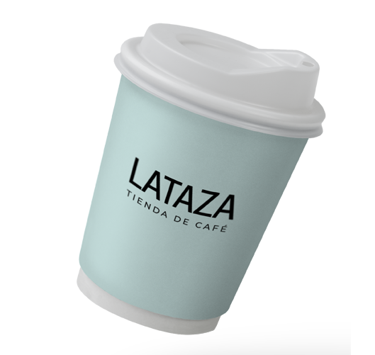

Hacemos envíos a todo el país 🚚 ☕
Solo por hoy 10% de descuento en toda la tienda
Home
Comprar Café
Accesorios
Blog
Contacto
Descubrí un nuevo mundo de sabores
Todo lo que necesitás saber antes de comprar café por primera vez
Y consejos prácticos para decidirte mejor
Ver más
